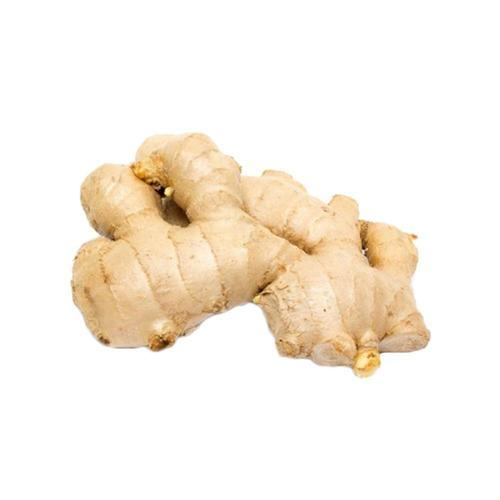

आले विषयी माहिती

प्रस्तावना
आले या वनस्पतीची लागवड पौराणिक काळापासून केली जाते. आल्यातील विशिष्ट चव व स्वाद यामुळे दररोजच्या जेवणातील
मसाल्यात आल्याचे महत्वाचे स्थान आहे.
ओले आले, प्रक्रिया करून टिकवलेले आले अथवा सुंठ अशा स्वरुपात आल्याचा उपयोग
करतात. जमिनीतील आल्याच्या खोडाचा उपयोग मसाल्यासाठी करतात.
हवामान व जमीन
आल्याला उष्ण व दमट हवामान मानवते. थंडीमुळे आल्याची पानेवाढ थांबते व जमिनीत खोडाची वाढ सुरु होते.
मात्र
शेतकऱ्यांच्या अनुभवावरून असेही लक्षात आले की , साताऱ्यापासून मराठवाड्यापर्यंत पीक येऊ शकते.
समुद्रकिनाऱ्याच्या
भागात जेथे २०० से. मी. किंवा थोडा जास्तच पाऊस पडतो तेथे पावसाळी पाण्यावर आले घेतले जाते. समुद्रसपाटी पासून १००
ते १५०० मीटर उंचीपर्यंतच्या प्रदेशात आल्याची लागवड करण्यात येते.
आल्यासाठी मध्यम खोलीची उत्तम निचरा असलेली कसदार जमीन उत्तम असते. नदीकाठच्या पोयटाच्या गाळ मिश्रित जमिनीत आले
उत्तम येते. जमिनीवर पाणी तुंबून राहिलेले ह्या पिकास नुकसानकारक असते.
तसेच जमिनीत विम्लतेचे प्रमाण जास्त नसावे.
एकाच जमिनीत मात्र वरचेवर आले घेऊ नये कारण त्यावर येणाऱ्या मर रोगाचे नियंत्रण अवघड जाते.
पूर्वमशागत
आल्याचे गड्डे जमिनीत वाढत असल्यामुळे सखोल पूर्वमशागत करणे गरजेचे असते. जमीन लोखंडी नांगराने ३०-४० से. मी. खोल
उभी आडवी नांगरून घ्यावी.
३ – ४ कुळवाच्या पाळ्या देऊन माती भूशभुशीत करून घ्यावी. या पिकाच्या लागवडीसाठी जमिनीची
आखणी निरनिराळ्या पद्धतीने केली जाते. हलक्या जमिनीत सपाट वाफे पध्दत, मध्यम व भारी जमिनीत सऱ्यावरंबे पध्दत
वापरतात.
जमिनीत हेक्टरी ४० गाड्यापर्यंत (२० टन) शेणखत टाकावे.
महाराष्ट्रातील काळ्या जमिनीत रुंद वरंब्याची पध्दत फायदेशीर ठरली आहे. सपाट वाफे 3 X 2 मीटर आकाराचे करतात. दोन
वरंब्यात ६० से. मी. अंतर ठेवतात तर गादी वाफ्यावर लागवड करताना 3 X १ मीटर आकाराच्या १५-२० से.मी. उंच वाफ्यावर
लागवड करतात.
बियाण्याची निवड, लागवडीची वेळ व लागवड
महाराष्ट्र माहीम या स्थानिक जातीची लागवड करतात. या जातीमध्ये मोक्या व आंगऱ्या असे दोन प्रकार आढळतात.
चांगल्या
प्रतीचे निरोगी ३-५ से. मी. लांबी व अंदाजे २०-२५ ग्रॅम वजनाचे आणि २-३ कोंब रुजण्याइतपत डोळे असलेले बेणे निवडावे.
एक हेक्टर लागवडीस साधारणपणे १४०० ते २००० किलो बेणे लागते.
सध्या वाफ्यात आल्याची लागण २५ X २२.५ से. मी. अंतरावर
करतात. बेने ४-५ से. मी. खोल लावून मातीने झाकावे. लागण कोरडीत करून हलके पाणी सोडून वाफे भिजवतात. गड्डा लावताना
कोबांची टोके जमिनीच्या वरच्या बाजूस येतील अशी काळजी घेऊन लागण करावी.
आले कीड-
रोगाला नाजूक असल्याने कंद लागवडीच्या वेळी प्रतिबंधक उपाय म्हणून डायथेन-झेड-७८ आणि नुवाक्रॉन अनुक्रमे २५० ग्रॅम
आणि १०० मि. ली. , १०० लीटर पाण्याच्या मिश्रणात बुडवून लावावेत.
मे महिन्याच्या दुसऱ्या आठवड्यापासून जून महिन्याच्या पहिल्या आठवड्यापर्यंत आल्याची लागवण करतात.
आंतरमशागत
लागवडीनंतर १५ – २० दिवसात कोंब जमिनीच्या वर दिसू लागतात. त्यानंतर लगेच कोंबाना धक्का न लागेल अशी काळजी घेऊन
वाफ्यातील तण काढून घ्यावेत. वेळोवेळी हात खुरपणी करून तण काढावे.
पीक १२० दिवसाचे झाल्यावर हलकी खोदणी करून दुसरा
वरखताचा हप्ता द्यावा. त्यामुळे गड्ड्याची नीट वाढ होण्यास मदत होते.
पाणी
लागण होताच एक हलके पाणी द्यावे. पाऊसमान लक्षात घेऊन दर ६ ते ८ दिवसांनी पिकास पाणी द्यावे. पिकात पाणी साचून राहू
नये याची काळजी घेणे फार महत्वाचे आहे.
वरखते
लावणीच्या वेळी १०० किलो अमोनिअम सल्फेट, ३०० किलो सुपर फॉस्फेट व ८० किलो म्युरेट ऑफ पोटॅश वाफ्यात टाकावे व
त्यानंतर ६ ते ८ आठवड्याने ५० किलो व १२० दिवसांनी १०० किलो युरिया द्यावा.
काढणी व उत्पादन
आल्याचे पिक ७ महिन्यात तयार होते. मात्र आले सुन्ठीकरता लावले असल्यास ८.५ ते ९ महिन्यात पीक तयार होते. जानेवारी
महिन्यात पाने पिवळी पडून वाळू लागतात.
वाळलेला पाला कापून पाला पाचोळा वेचून घ्यावा. कुदळीने खोदून आल्याच्या
गड्डयांची काढणी करतात. खणताना गड्यांना इजा होणार नाही याची काळजी घ्यावी. आले वेचून पाण्याने स्वच्छ धुवून गड्डे व
बोटे (नवीन आले) वेगवेगळी करावी. हेक्टरी उत्पादन १०-१५ टनापर्यंत येऊ शकते.
काढण्याच्या वेळी चागला भाव नसेल तर आले
न काढता त्यास दर १० दिवसनी पाणी देणे चालु ठेवतात. एप्रिल अखेर कंदावर पुन्हा फुटवे येऊन त्याची वाढ सुरु होते.
त्यानंतर त्यास वाढ व पोषणासाठी आधीच्या पोषणाइतकीच खते द्यावीत.
अशा द्वी हंगामी पीकही काढणी पुढील ऑगस्टमध्ये
करतात. या पिकाचे उत्पादन हेक्टरी ३० ते ४० टनापर्यंत येते.
सुंठ तयार करणे (ड्राय क्युअर्ड जिंजर)
आले जमिनीतून काढल्यानंतर त्यावरील माती पाण्याने धुवून काढतात व आले स्वच्छ धुवून करतात. उन्हात सुकविल्यावर हे आले
पुन्हा पाण्यात भिजू देतात.
साल नरम झाल्यावर आले पाण्यातून काढून त्यावरील साल कोरड्या फडक्याने घासून काढतात.
त्यानंतर चुन्याच्या निवळीत तीन टप्प्याने भिजत ठेवावे. त्यानंतर हवाबंद खोलीत गंधकाची धुरी देतात. परत उन्हात
सुकवून ६ तास गंधकाची धुरी देतात.
नंतर उन्हात चांगले सुकतात. अशा तऱ्हेने तयार झालेली सुंठ ओल्या आल्याच्या मानाने
१५ ते २० टक्के या प्रमाणात मिळते दर हेक्टरी ७५०० किलो आले १८५० किलो सुंठ मिळते.
कीड व रोग
कीड
खोडमाशी:- हि माशी खोडावर उपद्रव करते. या माशीच्या नियंत्रणासाठी १०० मि. ली. कोणतेही कीटकनाशक १०० लीटर पाण्यात
मिसळून फवारावे.
कंदमाशी:- या माशीच्या नियंत्रणासाठी १० दाणेदार फोरेट, हेक्टरी 20 किलो टाकतात.
उन्नी (हुमणी):- या किडीचा प्रादुर्भाव आढळल्यास जमिनीत आले लावताच १० टक्के बी. एच. सी. ५० किलो हेक्टरी प्रमाण
खताबरोबर मिसळावी. तसेच बी. एच. सी. बरोबर ५०० किलो निम पेंड दिली तर कीड नियंत्रण होऊन पिकाला खतही मिळते.
रोग
नरम कूज:- जमिनीत पाण्याचा निचरा बरोबर न झाल्याने या रोगाचा प्रादुर्भाव होतो. शेंड्याकडून झाड वाळत जाते.
बुंध्याच्या भाग सडल्यामुळे सहज उपटला जाऊ शकतो. त्यानंतर जमिनीतील गाठे सडण्यास सुरुवात होते.
उपाय
रोगट झाडे समूळ उपटून नष्ट करावी
.
लावणीपूर्वी व नंतर दर महिन्यास जमिनीवर व पिकावर ५:५:५० चे बोर्डोमिश्रण फवारावे.
पिकाचा फेरपालट, उत्तम निचरा होणार्या जमिनीत लागवड अत्यावश्यक.
योजना
केंद्र पुरस्कृत मसाला पीक विकास योजनेअंतर्गत सुधारित जाती, तंत्रज्ञान इत्यान्दीचा प्रसार होण्याकरिता शेतकऱ्यांना
आल्याचे १० आरचे प्रात्यक्षिक प्लॉटला येणाऱ्या खर्चाच्या ५० टक्के व जास्तीत जास्त रुपये १२०० देण्यात येतात.
परसबागेतील आल्याची लागवड करण्याकरिता ५ किलो बेणे आणि पीक सरंक्षणाकरिता खर्चाच्या ५० टक्के व जास्तीत जास्त रुपये
१००/- चे मर्यादित अनुदान देण्यात येते.